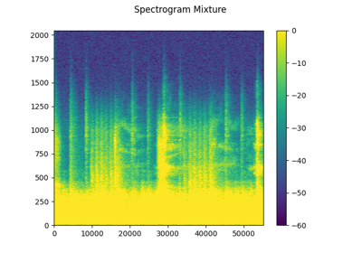

HDemucs¶
- class torchaudio.models.HDemucs(sources: List[str], audio_channels: int = 2, channels: int = 48, growth: int = 2, nfft: int = 4096, depth: int = 6, freq_emb: float = 0.2, emb_scale: int = 10, emb_smooth: bool = True, kernel_size: int = 8, time_stride: int = 2, stride: int = 4, context: int = 1, context_enc: int = 0, norm_starts: int = 4, norm_groups: int = 4, dconv_depth: int = 2, dconv_comp: int = 4, dconv_attn: int = 4, dconv_lstm: int = 4, dconv_init: float = 0.0001)[source]¶
Hybrid Demucs model from Hybrid Spectrogram and Waveform Source Separation [Défossez, 2021].
See also
hdemucs_low(),hdemucs_medium(),hdemucs_high(): factory functions.torchaudio.pipelines.SourceSeparationBundle: Source separation pipeline with pre-trained models.
- Parameters
sources (List[str]) – list of source names. List can contain the following source options: [
"bass","drums","other","mixture","vocals"].audio_channels (int, optional) – input/output audio channels. (Default: 2)
channels (int, optional) – initial number of hidden channels. (Default: 48)
growth (int, optional) – increase the number of hidden channels by this factor at each layer. (Default: 2)
nfft (int, optional) – number of fft bins. Note that changing this requires careful computation of various shape parameters and will not work out of the box for hybrid models. (Default: 4096)
depth (int, optional) – number of layers in encoder and decoder (Default: 6)
freq_emb (float, optional) – add frequency embedding after the first frequency layer if > 0, the actual value controls the weight of the embedding. (Default: 0.2)
emb_scale (int, optional) – equivalent to scaling the embedding learning rate (Default: 10)
emb_smooth (bool, optional) – initialize the embedding with a smooth one (with respect to frequencies). (Default:
True)kernel_size (int, optional) – kernel_size for encoder and decoder layers. (Default: 8)
time_stride (int, optional) – stride for the final time layer, after the merge. (Default: 2)
stride (int, optional) – stride for encoder and decoder layers. (Default: 4)
context (int, optional) – context for 1x1 conv in the decoder. (Default: 4)
context_enc (int, optional) – context for 1x1 conv in the encoder. (Default: 0)
norm_starts (int, optional) – layer at which group norm starts being used. decoder layers are numbered in reverse order. (Default: 4)
norm_groups (int, optional) – number of groups for group norm. (Default: 4)
dconv_depth (int, optional) – depth of residual DConv branch. (Default: 2)
dconv_comp (int, optional) – compression of DConv branch. (Default: 4)
dconv_attn (int, optional) – adds attention layers in DConv branch starting at this layer. (Default: 4)
dconv_lstm (int, optional) – adds a LSTM layer in DConv branch starting at this layer. (Default: 4)
dconv_init (float, optional) – initial scale for the DConv branch LayerScale. (Default: 1e-4)
- Tutorials using
HDemucs: - 
Music Source Separation with Hybrid Demucs
Music Source Separation with Hybrid Demucs
forward¶
- HDemucs.forward(input: Tensor)[source]¶
HDemucs forward call
- Parameters
input (torch.Tensor) – input mixed tensor of shape (batch_size, channel, num_frames)
- Returns
- Tensor
output tensor split into sources of shape (batch_size, num_sources, channel, num_frames)